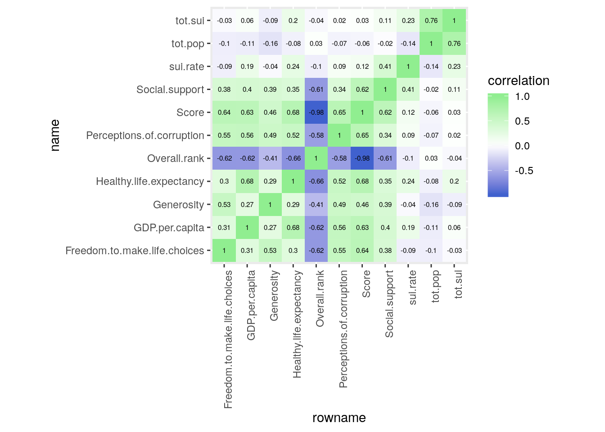
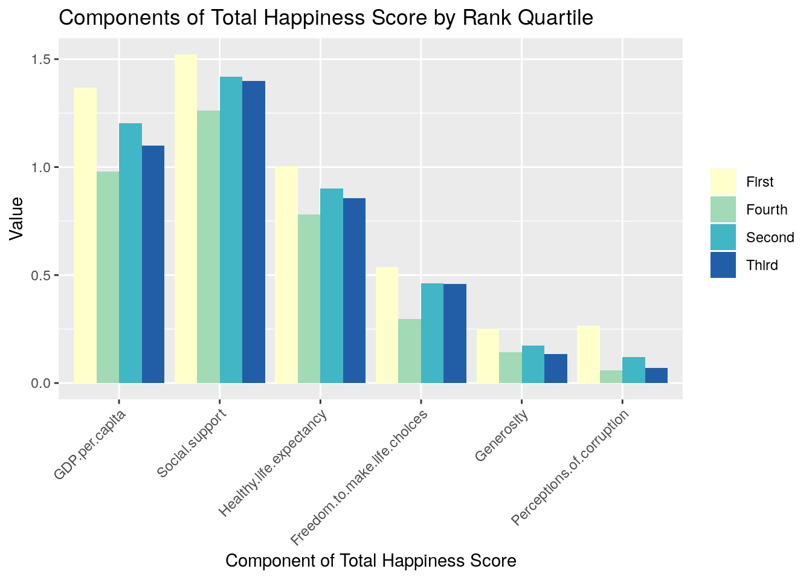
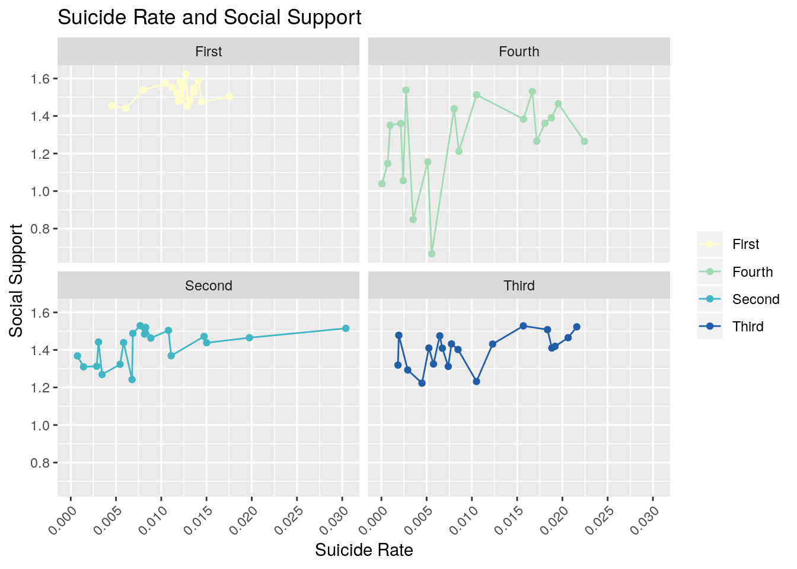
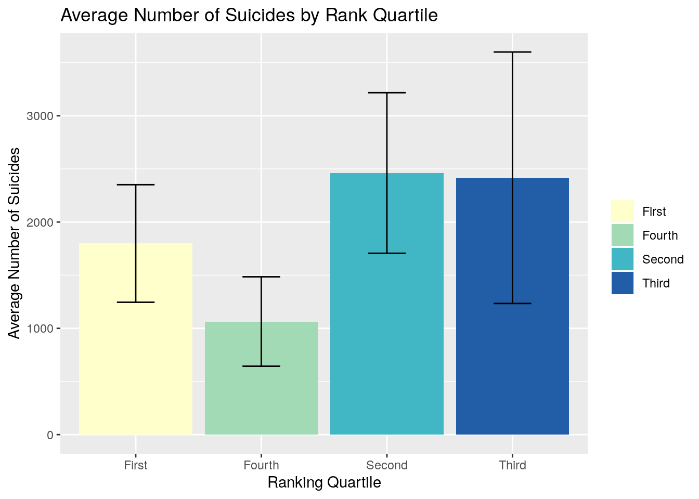
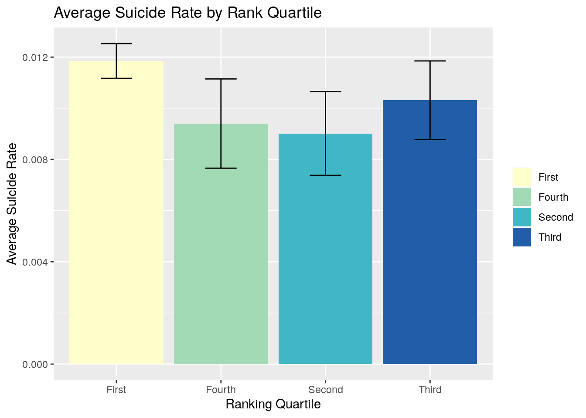
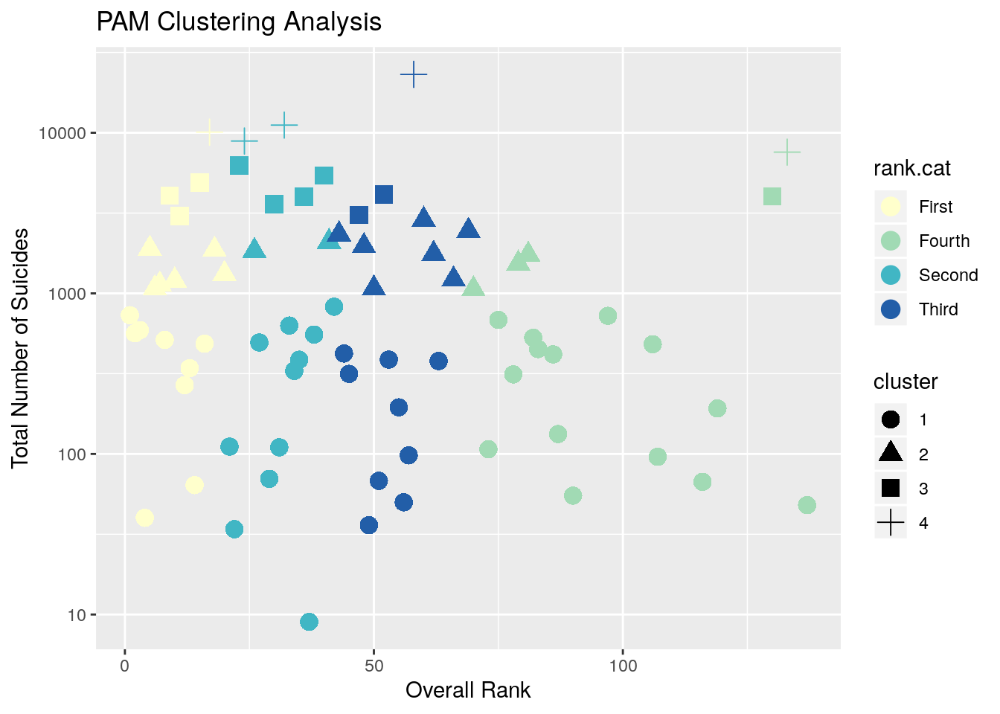

The World Health Organization (WHO) is an agency of the United Nations tasked with helping the populations of the 194 member nations live safer healthier lives. They compiled suicide statistics for 141 countries between the years of 1979 and 2016. The orignal dataset contains 43,776 rows and the six columns: country name, year, sex, age group, number of suicides, and the population of each age group. My second dataset is from the World Happiness Report (WHR), a Gallup survey of 156 countries results in a ranked list based on how happy citizens believe themselves to be. The 2019 WHR asked sample groups in each country to rate how much the variables: GDP per capita, social support, healthy life expectancy,freedom to make life choices, generosity, and perceptions of corruption influence their happiness. Averaged answers for each category are summed to find each country’s Happiness Score, which is then used in the rankings. I worked with the 2017 WHR for my final project in Biostatistics last year, and I thought it would be interesting to use the 2019 data in a new way. In our minds, happiness and suicide have almost a perfectly negative correlation with eachother. It would seem that the lowest ranking or unhappiest countries would have higher rates of suicide. I chose these datasets to invesitgate the effects of overall perceived happiness on suicides as well as what factors of the WHR contribute most to suicide rates among the world population.
The WHR and WHO Suicide Statistics datasets were both very tidy to begin with, so I did not have to do to much to clean them up. I started with the WHO data. I omitted all rows containing NAs, dropped the variables age group and sex, and created new summary variables using mutate. The WHR only contains rows for one year, so I selected the max year for each country and made new columns for total population (across all age groups in the highest available year), total suicides, and found the suicide rate by dividing total suicides by total population. Within the WHR dataset, I did nothing but remove all rows containing NAs. For the sake of the project, I pivoted the data wider by making each country in WHR it’s own column with its ranking as the value, and then used pivot_longer to restore the data to its original form.
library(tidyverse)## ── Attaching packages ──────────────────────────────────────────────────────────── tidyverse 1.3.0 ──## ✔ ggplot2 3.2.1 ✔ purrr 0.3.3
## ✔ tibble 2.1.3 ✔ dplyr 0.8.3
## ✔ tidyr 1.0.0.9000 ✔ stringr 1.4.0
## ✔ readr 1.3.1 ✔ forcats 0.4.0## ── Conflicts ─────────────────────────────────────────────────────────────── tidyverse_conflicts() ──
## ✖ dplyr::filter() masks stats::filter()
## ✖ dplyr::lag() masks stats::lag()library(ggplot2)
who <- read.csv("who_suicide_statistics.csv")
who <- who %>% group_by(country, year) %>% na.omit %>%
select(-age,-sex) %>%
mutate(tot.pop = sum(population)) %>% select(-population)%>%
mutate(tot.sui = sum(suicides_no)) %>% select(-suicides_no) %>%
distinct() %>% mutate(sui.rate = (tot.sui/tot.pop)*100)
who <- who %>% group_by(country) %>% filter(year == max(year))
whr <- read.csv("world_happiness_report.csv")
whr <- whr %>% na.omit %>%
rename(country = Country.or.region)%>%
arrange(desc(Overall.rank))
whr_wide <- whr %>% pivot_wider(names_from = country, values_from = Overall.rank)
whr_longer <- whr_wide %>% pivot_longer(8:163, names_to = "country")
pivot_longer(whr_wide, 8:163, names_to = "country", values_to = "Ranking", values_drop_na = T) ## # A tibble: 156 x 9
## Score GDP.per.capita Social.support Healthy.life.ex… Freedom.to.make…
## <dbl> <dbl> <dbl> <dbl> <dbl>
## 1 2.85 0.306 0.575 0.295 0.01
## 2 3.08 0.026 0 0.105 0.225
## 3 3.20 0.35 0.517 0.361 0
## 4 3.23 0.476 0.885 0.499 0.417
## 5 3.33 0.359 0.711 0.614 0.555
## 6 3.38 0.287 1.16 0.463 0.143
## 7 3.41 0.191 0.56 0.495 0.443
## 8 3.46 0.619 0.378 0.44 0.013
## 9 3.49 1.04 1.14 0.538 0.455
## 10 3.60 0.323 0.688 0.449 0.026
## # … with 146 more rows, and 4 more variables: Generosity <dbl>,
## # Perceptions.of.corruption <dbl>, country <chr>, Ranking <int>whr <- whr %>% arrange(Overall.rank)I used a full join by country to combine the WHR and WHO Suicide Statistics datasets. I chose the full join because I didn’t want to worry about any data being dropped through the joining process. After joining, I looked at the data and saw that a lot of countries had data for one set but not the other. 122 rows were dropped because they lacked complete data. Many of the dropped countries are smaller nations who were not included in the WHR, this could potentially skew the data toward more developed countries.
join_data <- whr %>% full_join(who)## Joining, by = "country"## Warning: Column `country` joining factors with different levels, coercing to
## character vectorfinal_data <- join_data %>% na.omitI used the summarize function to create many different summary statistics, to help me understand my data better. I first looked at the difference in average scores between the original WHR data and my joined and tidied version. The average score rose from 5.407096 to 6.144447, proving my fear that the removal of NAs would disproportionately affect unhappier/less developed countries. Another interesting statistic was the mean and standard deviation of total suicides, 1935.395 and 3393.004 respectively. This shows that there is a lot of variation within the number of suicides between every country. This translated to suicide rate, which I calculated earlier using summary statistics, with the maximum rate being 0.0303995%n and the minimum, .00006084794%. The correlation heat map of all numeric variables in the dataset yielded disappointing results. I expected to find a strong negative correlation between Overall Rank and suicide rate or total suicides, but the data showed only a -0.1 and -0.04 correlation for each. Almost all WHR variables showed positive correlations with suicide rate, which I again did not expect. I thought that as happiness increased, rates of suicide would decrease, but the correlation table shows that not to be the case. The highest correlation values between WHR variables and suicide rate are social support (0.41), healthy life expectancy (0.24), and GDP per capita (0.19).
whr %>% summarize(avg.Score = mean(Score), sd.Score = sd(Score))## avg.Score sd.Score
## 1 5.407096 1.11312final_data %>% summarize(avg.Score = mean(Score), sd.Score = sd(Score))## avg.Score sd.Score
## 1 6.144447 0.8612737final_data %>% summarize(avg.pop = mean(tot.pop), sd.pop = sd(tot.pop))## avg.pop sd.pop
## 1 21899407 33341410final_data %>% summarize(avg.sui = mean(tot.sui), sd.sui = sd(tot.sui))## avg.sui sd.sui
## 1 1935.395 3393.004final_data %>% summarize(avg.rate = mean(sui.rate), sd.rate = sd(sui.rate))## avg.rate sd.rate
## 1 0.01014467 0.006335994final_data %>% summarize(max.rate = max(sui.rate),
min.rate = min(sui.rate))## max.rate min.rate
## 1 0.0303995 6.084794e-05final_data %>% filter(sui.rate==max(sui.rate))## Overall.rank country Score GDP.per.capita Social.support
## 1 42 Lithuania 6.149 1.238 1.515
## Healthy.life.expectancy Freedom.to.make.life.choices Generosity
## 1 0.818 0.291 0.043
## Perceptions.of.corruption year tot.pop tot.sui sui.rate
## 1 0.042 2016 2717150 826 0.0303995final_data %>% summarize(max.score = max(Score),
min.score = min(Score))## max.score min.score
## 1 7.769 4.166final_data <- final_data %>% mutate(year = as.character(year))
final_data %>% group_by(year) %>%
select(tot.pop, tot.sui, sui.rate) %>% summarize_all(mean) ## Adding missing grouping variables: `year`## # A tibble: 9 x 4
## year tot.pop tot.sui sui.rate
## <chr> <dbl> <dbl> <dbl>
## 1 2006 17891558 4015 0.0224
## 2 2007 7921100 55 0.000694
## 3 2009 592234 107 0.0181
## 4 2010 5287880. 104. 0.00246
## 5 2011 43401402 1250. 0.00242
## 6 2013 18722303 2284. 0.0123
## 7 2014 11334115. 1317. 0.00902
## 8 2015 30915820. 2637. 0.0101
## 9 2016 10004425. 1046. 0.0122final_cor <- final_data %>% select(-country, -year) %>% cor()%>%
as.data.frame() %>% rownames_to_column %>%
pivot_longer(-1,names_to="name",values_to="correlation")
final_cor%>%ggplot(aes(rowname,name,fill=correlation))+
geom_tile()+
scale_fill_gradient2(low="royalblue3",mid="white",high="palegreen2")+
geom_text(aes(label=round(correlation,2)),color = "black", size = 2)+
theme(axis.text.x = element_text(angle = 90, hjust = 1))+
coord_fixed()
final_data <- final_data%>%
mutate(rank.cat = case_when(Overall.rank>69 ~ "Fourth",
43<=Overall.rank & Overall.rank<=69 ~ "Third",
21<=Overall.rank & Overall.rank<= 42 ~ "Second",
Overall.rank<=20 ~ "First"))The plot, “Components of Total Happiness Score by Rank Quartile”, depicts the proportional contribution of each WHR variable to the Happiness Score of countries in each rank quartile. Across all groups, social support is the most important factor to happiness, followed closely by GDP per capita. Perceptions of corruption is shown to be the least important to overall happiness.
library(reshape2)##
## Attaching package: 'reshape2'## The following object is masked from 'package:tidyr':
##
## smithsdf <- final_data %>%
select(-Overall.rank,-country,-Score,-year,-tot.pop,-tot.sui, -sui.rate)%>% group_by(rank.cat) %>% summarize_all(mean)
df_molten <- melt(df, value.name="Value", variable.name="Variable", na.rm=TRUE)## Using rank.cat as id variablesplot2 <- df_molten %>% ggplot(aes(x = Variable, y = Value, fill = rank.cat))+
geom_bar(position = "dodge", stat = "identity") +
theme(axis.text.x = element_text(angle=45, hjust=1)) +
scale_fill_brewer(palette = "YlGnBu") + ggtitle("Components of Total Happiness Score by Rank Quartile") + xlab("Component of Total Happiness Score")
plot2 + theme(legend.title=element_blank())
Social support had the highest correlation with suicide rate and was found to be the highest contributor to overall happiness. “Suicide Rate and Social Support” shows the realtionship between the two, faceted by ranking quartile. Values for social support tend to be fairly consitent between each country and rank quartile. The fourth quartile shows much more variability, but not in any sort of logical fashion. One would believe that those countries with low social support scores, would exhibit higher suicide rates, but that does not appear to be the case. Another interesting element of this graph is the spread of suicide rate. In the first quartile, the points are condensed and the range of suicide rate values is small. The second quartile shows the greatest variation in suicide rate. It stretches from Bahrain (0.0007413717%) to the country with the highest suicide rate in the dataset, Lithuania (0.0303995%).
final_data %>%
ggplot(aes(x=sui.rate, y =Social.support, color = rank.cat)) +
geom_point()+geom_line()+scale_color_brewer(palette = "YlGnBu")+
scale_x_continuous(breaks=seq(0, 0.03, .005))+
theme(axis.text.x = element_text(angle=45, hjust=1))+
facet_wrap(~rank.cat)+ theme(legend.title=element_blank()) +
ggtitle("Suicide Rate and Social Support")+
xlab("Suicide Rate") + ylab("Social Support")
In these two graphs, I wanted to look at the effect of population on suicides by comparing the average number of suicides and the average suicide rates of each ranking quartile. The second quartile leads in average number of suicides with 2461.895, followed closely by third, (2417.105)], first (1798.368), and fourth (1064.211). However, when normalized by population, the order changes. When observing average suicide rate, the highest rate belongs to the first quartile group (0.01184895%). Countries in the third quartile group follow (0.01031495%), fourth (0.009402343%), and finally, the second quartile group (0.00901246%). This shift in order is explained by the average populations of the groups. The second quartile has the largest average population (31483685), then third (23317412), fourth (17338072), and first (15458458). While the second and third quartile groups have the highest average number of suicides, their high average population sizes lower their average suicide rates.
final_data %>% ggplot(aes(x=rank.cat, y=tot.sui, fill = rank.cat))+
geom_bar(stat = "summary")+
geom_errorbar(aes(width = 0.3), stat="summary",position="dodge")+
scale_fill_brewer(palette = "YlGnBu") +
ggtitle("Average Number of Suicides by Rank Quartile") +
xlab("Ranking Quartile") + ylab("Average Number of Suicides")+
theme(legend.title=element_blank())## No summary function supplied, defaulting to `mean_se()
## No summary function supplied, defaulting to `mean_se()
final_data %>% ggplot(aes(x=rank.cat, y=sui.rate, fill = rank.cat))+
geom_bar(stat = "summary")+
geom_errorbar(aes(width = 0.3), stat="summary",position="dodge")+
scale_fill_brewer(palette = "YlGnBu") +
ggtitle("Average Suicide Rate by Rank Quartile") +
xlab("Ranking Quartile") + ylab("Average Suicide Rate")+
theme(legend.title=element_blank())## No summary function supplied, defaulting to `mean_se()
## No summary function supplied, defaulting to `mean_se()
My main objective of this project was to investigate the possible realtionship between WHR ranking and reported suicides across the globe. Using a PAM Clustering Analysis, I applied four medoids to a scatterplot of Overall Rank v. Total Number of Suicides. I colored the points by their ranking quartile and point shape corresponds to cluster. The analysis shows that there is no clear distinction between ranking quartile and number of suicides. Every cluster has at least one point from each ranking quartile. It is unclear as to whether or not there is any link between WHR ranking and suicide on a global scale. I believe that differences in data collection between the two studies, as well as the large number of countries that I was forced to drop from the joined dataset contributed to the indefinite results of the project.
library(cluster)
clust_dat<-final_data%>%select(Overall.rank,tot.sui)
pam1<-clust_dat%>%pam(k=4)
pamclust<-clust_dat%>%mutate(cluster=as.factor(pam1$clustering))
pamclust%>%mutate(rank.cat=final_data$rank.cat)%>%
ggplot(aes(Overall.rank, tot.sui, color=rank.cat, shape=cluster))+geom_point(size=4)+ggtitle("PAM") +
scale_color_brewer(palette = "YlGnBu")+
ggtitle("PAM Clustering Analysis") +
xlab("Overall Rank") + ylab("Total Number of Suicides")+scale_y_log10() 